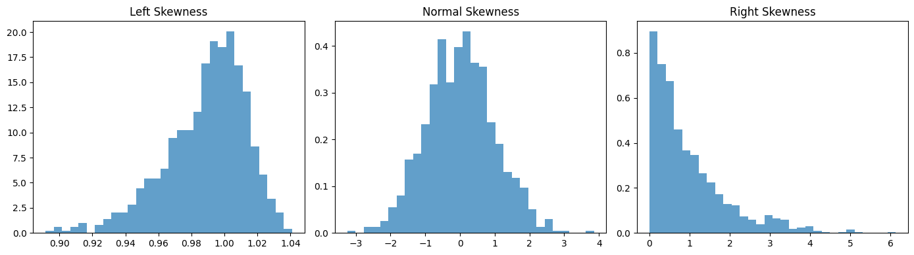
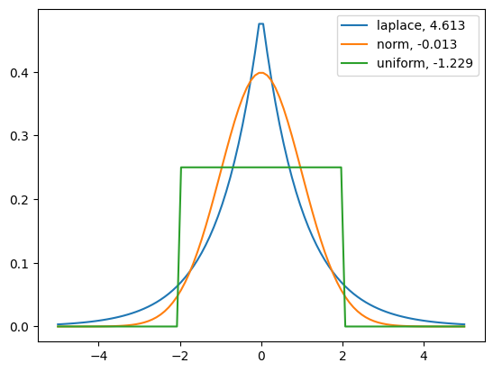

Klasifikasi Data Audio Menggunakan Zero Crossing Rate#
Nama : Qoid Rif’at
NIM : 210411100160
Kelas : Proyek Sains Data (A)
pip install librosa
Requirement already satisfied: librosa in /usr/local/lib/python3.10/dist-packages (0.10.1)
Requirement already satisfied: audioread>=2.1.9 in /usr/local/lib/python3.10/dist-packages (from librosa) (3.0.1)
Requirement already satisfied: numpy!=1.22.0,!=1.22.1,!=1.22.2,>=1.20.3 in /usr/local/lib/python3.10/dist-packages (from librosa) (1.23.5)
Requirement already satisfied: scipy>=1.2.0 in /usr/local/lib/python3.10/dist-packages (from librosa) (1.11.3)
Requirement already satisfied: scikit-learn>=0.20.0 in /usr/local/lib/python3.10/dist-packages (from librosa) (1.2.2)
Requirement already satisfied: joblib>=0.14 in /usr/local/lib/python3.10/dist-packages (from librosa) (1.3.2)
Requirement already satisfied: decorator>=4.3.0 in /usr/local/lib/python3.10/dist-packages (from librosa) (4.4.2)
Requirement already satisfied: numba>=0.51.0 in /usr/local/lib/python3.10/dist-packages (from librosa) (0.58.1)
Requirement already satisfied: soundfile>=0.12.1 in /usr/local/lib/python3.10/dist-packages (from librosa) (0.12.1)
Requirement already satisfied: pooch>=1.0 in /usr/local/lib/python3.10/dist-packages (from librosa) (1.8.0)
Requirement already satisfied: soxr>=0.3.2 in /usr/local/lib/python3.10/dist-packages (from librosa) (0.3.7)
Requirement already satisfied: typing-extensions>=4.1.1 in /usr/local/lib/python3.10/dist-packages (from librosa) (4.5.0)
Requirement already satisfied: lazy-loader>=0.1 in /usr/local/lib/python3.10/dist-packages (from librosa) (0.3)
Requirement already satisfied: msgpack>=1.0 in /usr/local/lib/python3.10/dist-packages (from librosa) (1.0.7)
Requirement already satisfied: llvmlite<0.42,>=0.41.0dev0 in /usr/local/lib/python3.10/dist-packages (from numba>=0.51.0->librosa) (0.41.1)
Requirement already satisfied: platformdirs>=2.5.0 in /usr/local/lib/python3.10/dist-packages (from pooch>=1.0->librosa) (4.0.0)
Requirement already satisfied: packaging>=20.0 in /usr/local/lib/python3.10/dist-packages (from pooch>=1.0->librosa) (23.2)
Requirement already satisfied: requests>=2.19.0 in /usr/local/lib/python3.10/dist-packages (from pooch>=1.0->librosa) (2.31.0)
Requirement already satisfied: threadpoolctl>=2.0.0 in /usr/local/lib/python3.10/dist-packages (from scikit-learn>=0.20.0->librosa) (3.2.0)
Requirement already satisfied: cffi>=1.0 in /usr/local/lib/python3.10/dist-packages (from soundfile>=0.12.1->librosa) (1.16.0)
Requirement already satisfied: pycparser in /usr/local/lib/python3.10/dist-packages (from cffi>=1.0->soundfile>=0.12.1->librosa) (2.21)
Requirement already satisfied: charset-normalizer<4,>=2 in /usr/local/lib/python3.10/dist-packages (from requests>=2.19.0->pooch>=1.0->librosa) (3.3.2)
Requirement already satisfied: idna<4,>=2.5 in /usr/local/lib/python3.10/dist-packages (from requests>=2.19.0->pooch>=1.0->librosa) (3.4)
Requirement already satisfied: urllib3<3,>=1.21.1 in /usr/local/lib/python3.10/dist-packages (from requests>=2.19.0->pooch>=1.0->librosa) (2.0.7)
Requirement already satisfied: certifi>=2017.4.17 in /usr/local/lib/python3.10/dist-packages (from requests>=2.19.0->pooch>=1.0->librosa) (2023.7.22)
from google.colab import drive
drive.mount ('/content/drive')
---------------------------------------------------------------------------
KeyboardInterrupt Traceback (most recent call last)
<ipython-input-2-47ccba274b6a> in <cell line: 2>()
1 from google.colab import drive
----> 2 drive.mount ('/content/drive')
/usr/local/lib/python3.10/dist-packages/google/colab/drive.py in mount(mountpoint, force_remount, timeout_ms, readonly)
101 def mount(mountpoint, force_remount=False, timeout_ms=120000, readonly=False):
102 """Mount your Google Drive at the specified mountpoint path."""
--> 103 return _mount(
104 mountpoint,
105 force_remount=force_remount,
/usr/local/lib/python3.10/dist-packages/google/colab/drive.py in _mount(mountpoint, force_remount, timeout_ms, ephemeral, readonly)
130 )
131 if ephemeral:
--> 132 _message.blocking_request(
133 'request_auth', request={'authType': 'dfs_ephemeral'}, timeout_sec=None
134 )
/usr/local/lib/python3.10/dist-packages/google/colab/_message.py in blocking_request(request_type, request, timeout_sec, parent)
174 request_type, request, parent=parent, expect_reply=True
175 )
--> 176 return read_reply_from_input(request_id, timeout_sec)
/usr/local/lib/python3.10/dist-packages/google/colab/_message.py in read_reply_from_input(message_id, timeout_sec)
94 reply = _read_next_input_message()
95 if reply == _NOT_READY or not isinstance(reply, dict):
---> 96 time.sleep(0.025)
97 continue
98 if (
KeyboardInterrupt:
%cd /content/drive/MyDrive/psd a
/content/drive/MyDrive/psd a
import librosa
x1, sr = librosa.load("audio1.wav")
x2, sr = librosa.load("audio2.wav")
x3, sr = librosa.load("audio3.wav")
import numpy as np
import scipy
freqs = np.fft.fftfreq(x1.size)
def describe_freq(freqs):
mean = np.mean(freqs)
minv = np.amin(freqs)
maxv = np.amax(freqs)
std = np.std(freqs)
median = np.median(freqs)
skew = scipy.stats.skew(freqs)
kurt = scipy.stats.kurtosis(freqs)
freqs = np.fft.fftfreq(x2.size)
def describe_freq(freqs):
mean = np.mean(freqs)
minv = np.amin(freqs)
maxv = np.amax(freqs)
std = np.std(freqs)
median = np.median(freqs)
skew = scipy.stats.skew(freqs)
kurt = scipy.stats.kurtosis(freqs)
freqs = np.fft.fftfreq(x3.size)
def describe_freq(freqs):
mean = np.mean(freqs)
minv = np.amin(freqs)
maxv = np.amax(freqs)
std = np.std(freqs)
median = np.median(freqs)
skew = scipy.stats.skew(freqs)
kurt = scipy.stats.kurtosis(freqs)
import numpy as np
import matplotlib.pyplot as plt
from scipy.stats import skew, norm, gamma
np.random.seed(42)
# generate normal, left-skewed, and right-skewed samples
normal_freqs = np.random.normal(loc=0, scale=1, size=1000)
left_freqs = np.random.weibull(50,1000)
right_freqs = gamma.rvs(a=1, size=1000)
# plot these
fig, axs = plt.subplots(nrows=1, ncols=3, figsize=(14, 4))
axs[0].hist(left_freqs, bins=30, density=True, alpha=0.7)
axs[0].set_title("Left Skewness")
axs[1].hist(normal_freqs, bins=30, density=True, alpha=0.7)
axs[1].set_title("Normal Skewness")
axs[2].hist(right_freqs, bins=30, density=True, alpha=0.7)
axs[2].set_title("Right Skewness")
plt.tight_layout()
plt.show()

import numpy as np
from scipy.stats import shapiro
from scipy.stats import kstest
stat, p = shapiro(normal_freqs)
print("Shapiro-Wilk test for normal distribution:")
print("Statistical value:", stat, ", p-value:", p)
stat, p = shapiro(left_freqs)
print("Shapiro-Wilk test for skewed distribution:")
print("Statistical value:", stat, ", p-value:", p)
stat, p = shapiro(right_freqs)
print("Shapiro-Wilk test for skewed distribution:")
print("Statistical value:", stat, ", p-value:", p)
# Perform the Kolmogorov-Smirnov test on each data set
stat, p = kstest(normal_freqs, 'norm')
print("Kolmogorov-Smirnov test for normal distribution:")
print("Statistical value:", stat, ", p-value:", p)
stat, p = kstest(left_freqs, 'norm')
print("Kolmogorov-Smirnov test for skewed distribution:")
print("Statistical value:", stat, ", p-value:", p)
stat, p = kstest(right_freqs, 'norm')
print("Kolmogorov-Smirnov test for skewed distribution:")
print("Statistical value:", stat, ", p-value:", p)
Shapiro-Wilk test for normal distribution:
Statistical value: 0.9986080527305603 , p-value: 0.6264819502830505
Shapiro-Wilk test for skewed distribution:
Statistical value: 0.9578495621681213 , p-value: 2.266444967544346e-16
Shapiro-Wilk test for skewed distribution:
Statistical value: 0.8390923738479614 , p-value: 1.307680477323667e-30
Kolmogorov-Smirnov test for normal distribution:
Statistical value: 0.017327787320720822 , p-value: 0.9196626608357358
Kolmogorov-Smirnov test for skewed distribution:
Statistical value: 0.8147488205807106 , p-value: 0.0
Kolmogorov-Smirnov test for skewed distribution:
Statistical value: 0.5000046416228398 , p-value: 1.0533070064799348e-231
import numpy as np
import librosa
audio_file = "audio1.wav"
signal, sample_rate = librosa.load(audio_file)
zero_crossings = librosa.feature.zero_crossing_rate(signal)
mean_zero_crossings = np.mean(zero_crossings)
median_zero_crossings = np.median(zero_crossings)
std_zero_crossings = np.std(zero_crossings)
print(f"Mean Zero-Crossing Rate: {mean_zero_crossings}")
print(f"Median Zero-Crossing Rate: {median_zero_crossings}")
print(f"Standard Deviation of Zero-Crossing Rate: {std_zero_crossings}")
import matplotlib.pyplot as plt
import scipy.stats as stats
from scipy.stats import kurtosis
x = np.linspace(-5, 5, 100)
ax = plt.subplot()
distnames = ['laplace', 'norm', 'uniform']
for distname in distnames:
if distname == 'uniform':
dist = getattr(stats, distname)(loc=-2, scale=4)
else:
dist = getattr(stats, distname)
data = dist.rvs(size=1000)
kur = kurtosis(data, fisher=True)
y = dist.pdf(x)
ax.plot(x, y, label="{}, {}".format(distname, round(kur, 3)))
ax.legend()

import numpy as np
import librosa
audio_file = "audio1.wav"
signal, sample_rate = librosa.load(audio_file)
zero_crossings = librosa.feature.zero_crossing_rate(signal)
meana_zero_crossings = np.mean(zero_crossings)
mediana_zero_crossings = np.median(zero_crossings)
stda_zero_crossings = np.std(zero_crossings)
print(f"Mean Zero-Crossing Rate: {meana_zero_crossings}")
print(f"Median Zero-Crossing Rate: {mediana_zero_crossings}")
print(f"Standard Deviation of Zero-Crossing Rate: {stda_zero_crossings}")
Mean Zero-Crossing Rate: 0.022295977618243243
Median Zero-Crossing Rate: 0.01171875
Standard Deviation of Zero-Crossing Rate: 0.02245789951982053
import numpy as np
import librosa
audio_file = "audio2.wav"
signal, sample_rate = librosa.load(audio_file)
zero_crossings = librosa.feature.zero_crossing_rate(signal)
meanb_zero_crossings = np.mean(zero_crossings)
medianb_zero_crossings = np.median(zero_crossings)
stdb_zero_crossings = np.std(zero_crossings)
print(f"Mean Zero-Crossing Rate: {meanb_zero_crossings}")
print(f"Median Zero-Crossing Rate: {medianb_zero_crossings}")
print(f"Standard Deviation of Zero-Crossing Rate: {stdb_zero_crossings}")
Mean Zero-Crossing Rate: 0.13221263885498047
Median Zero-Crossing Rate: 0.13134765625
Standard Deviation of Zero-Crossing Rate: 0.01527410522315829
import numpy as np
import librosa
audio_file = "audio3.wav"
signal, sample_rate = librosa.load(audio_file)
zero_crossings = librosa.feature.zero_crossing_rate(signal)
meanc_zero_crossings = np.mean(zero_crossings)
medianc_zero_crossings = np.median(zero_crossings)
stdc_zero_crossings = np.std(zero_crossings)
print(f"Mean Zero-Crossing Rate: {meanc_zero_crossings}")
print(f"Median Zero-Crossing Rate: {medianc_zero_crossings}")
print(f"Standard Deviation of Zero-Crossing Rate: {stdc_zero_crossings}")
Mean Zero-Crossing Rate: 0.133019047289823
Median Zero-Crossing Rate: 0.0654296875
Standard Deviation of Zero-Crossing Rate: 0.19731362360864052
from tabulate import tabulate
# Tentukan nama kolom apa saja ketika inisialisasi tabel
tabel = [["ZR Mean", "ZR Median", "ZR Standart Deviation", "Label"]]
# Tambahkan data baris
[[meana_zero_crossings, mediana_zero_crossings, stda_zero_crossings, "Tidak Marah"]]
[[meanb_zero_crossings, medianb_zero_crossings, stdb_zero_crossings, "Tidak Marah"]]
[[meanc_zero_crossings, medianc_zero_crossings, stdc_zero_crossings, "Tidak Marah"]]
# Cetak Tabel
print(tabulate(tabel, headers='firstrow', tablefmt='fancy_grid'))
print(tabulate(tabel, headers='tworow', tablefmt='fancy_grid'))
[[meana_zero_crossings, mediana_zero_crossings, stda_zero_crossings, "Tidak Marah"]]
[[meanb_zero_crossings, medianb_zero_crossings, stdb_zero_crossings, "Tidak Marah"]]
[[meanc_zero_crossings, medianc_zero_crossings, stdc_zero_crossings, "Tidak Marah"]]
╒═════════════════════╤════════════════╤═══════════════════════╤═══════════════╕
│ 0.133019047289823 │ 0.0654296875 │ 0.19731362360864052 │ Tidak Marah │
╞═════════════════════╪════════════════╪═══════════════════════╪═══════════════╡
╘═════════════════════╧════════════════╧═══════════════════════╧═══════════════╛
╒══════════╤═══════════╤══════════╤═════════════╕
│ t │ w │ o │ r │
╞══════════╪═══════════╪══════════╪═════════════╡
│ 0.133019 │ 0.0654297 │ 0.197314 │ Tidak Marah │
╘══════════╧═══════════╧══════════╧═════════════╛
from prettytable import PrettyTable
# Tentukan nama kolom apa saja ketika inisialisasi tabel
tabelSiswa = PrettyTable(["ZR Mean", "ZR Median", "ZR Standart Deviation", "Label"])
# Tambahkan data baris
tabelSiswa.add_row([meana_zero_crossings, mediana_zero_crossings, stda_zero_crossings, "Tidak Marah"])
tabelSiswa.add_row([meanb_zero_crossings, medianb_zero_crossings, stdb_zero_crossings, "Tidak Marah"])
tabelSiswa.add_row([meanc_zero_crossings, medianc_zero_crossings, stdc_zero_crossings, "Tidak Marah"])
# Cetak Tabel Siswa
print(tabelSiswa)
+----------------------+---------------+-----------------------+-------------+
| ZR Mean | ZR Median | ZR Standart Deviation | Label |
+----------------------+---------------+-----------------------+-------------+
| 0.022295977618243243 | 0.01171875 | 0.02245789951982053 | Tidak Marah |
| 0.13221263885498047 | 0.13134765625 | 0.01527410522315829 | Tidak Marah |
| 0.133019047289823 | 0.0654296875 | 0.19731362360864052 | Tidak Marah |
+----------------------+---------------+-----------------------+-------------+